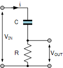

§ 2.11 Oscillator
Initially, biology used the abstraction that the measured resistance and capacitance are distributed along the membrane’s surface. It assumed a discrete equipotential membrane with capacity and that it leaks through a discrete resistance . However, in biology, no discrete elements for storing charge exist. The notion of storing charge can be used only in the sense that for the time of passing a finite-size element with finite propagation speed, the charge carriers spend the corresponding time in the element. That phenomenon resembles storing the charge, and that imitation enables us to describe a behavior resemblant to that of the biological circuit. Attempting to imitate the effects of biological “slow” currents using electric parallels hides that generating an AP is their native feature; furthermore, slow currents may also play a role in cognitive functions.
The simplest oscillators comprise only a resistor and a capacitor. Beause the capacitor ”stores” the charges, the output signal is different from the input signal (the circuit ”forms” the signal). Their behavior can be described by mathematical equations, as given in Table 2.1. Notice that the two discrete elements are connected at one ot their ends, leaving only two options how to connect the input an output signals to them. Correspondingly, we can produce a parallel or a serial connection.
| The RC Integrator | The RC differentiator |
| Low Pass Filter | High Pass Filter |
 |
 |
 |
 |
It may have different reasons why a current appears with a delay compared to the voltage, such as: the charge carriers of the current have finite speed, or, although they have infinitely high speed, they are stored for some reason for some time and released only some time later (as the conditions within the circuit change). In a limited way, we can imitate one effect with the other. Electronics uses the abstraction that circuits are composed of point-like discrete elements implementing abstract features such as resistance and capacitance, and they are connected with abstracted ideal wires, with no resistance. Given the lack of mathematics describing ”slow” currents, it is usual to imitate a neuronal circuit with a simple electric circuit having capacity and resistance . In that picture, the electric behavior can be described by summing the resistance and capacitance to single discrete components, i.e., we can use the formulas taken from electronics.
These ideal discrete elements can be connected in two ways, and those combinations have drastically different behavior. In the case of an integrator, (connecting the elements serially) ”the input is connected to a resistance while the output voltage is taken from across a capacitor”; in the case of a differentiator, ”the input signal is applied to one side of the capacitor with the output taken across the resistor”. Correspondingly, their output voltages are
The two circuits comprise the same electric components, but wired in a different way: they form a serial and a parallel circuit, respectively. The serial circuit is a passive differentiator circuit: ”the input is connected to a capacitor while the output voltage is taken from across a resistance” and it is not to be mismatched with the parallel passive integrator circuit where ”the input is connected to a resistance while the output voltage is taken from across a capacitor”. One of the most vital differences between those circuits (see also the figures in Table 2.1) that their output is defined by the time integral of the input voltage (or current) or by its time derivative. From a biological point of view, the differentiator can produce output voltage that differs from the input voltage in its sign, while the integrator cannot.
The integrator and differentiator are entirely different assemblies from the same components (based on the abstraction that and are discrete elements and the wiring is an ideal conductor), as their differential equations and waveforms show; see table from the electric tutorial. Although they have the same time constant , they form the input signal entirely differently. From the figures showing the generated signal forms, one sees that in the case of the differentiator, the input signal’s rising edge generates a positive output voltage, and the falling edge generates a negative voltage, in resemblance with the action potential. By replacing the input square wave current with a physically plausible input current function, we have good hopes to reproduce the AP voltage on the output of the circuit.
From a biological point of view, the most vital difference between those circuits (see also the figures in https://www.electronics-tutorials.ws/rc) is that their output is defined by the time integral of the input voltage or by its time derivative. The differentiator can produce output voltage that differs from the input voltage in its sign, while the integrator cannot. No additional currents and sophisticated control mechanisms are needed to describe the action potential with a differentiator-type neuronal circuit: it is a natural consequence of the interplay of the finite speed of the “slow” ionic current and the finite size of the neuronal membrane (see section 3.3.3). The shape of the output waveform depends on the pulse width ratio to the time constant. When is much larger than the pulse width, the output waveform resembles the input signal, even in the case of the square wave input.
If we use chained electric circuits, such as in multi-compartment membrane models [27, 78], the second circuit receives the output voltage of the first circuit at a later time, and so on. The system can be described by a system of equations similar to the one describing the single-compartment system, but they are valid at different times. Handling the many equipotential compartments attempts to cover the fact that one imitates finite membrane size and slow currents.
The Differentiator is a High Pass Filter type of circuit that can convert a square wave input signal into high frequency spikes at its output (For non-square wave input, the spikes get smeared). When the capacitor is fully charged the output voltage across the resistor is zero. The arrival of the falling edge of the input waveform (whether square-wave or other type of falling edge) causes the capacitor to reverse its current giving a negative output contribution, and the output spike changes from a positive value to a negative value, purely because it is a derivative. From the point of view of laws of motion (see section 2.7.2): the differentiator is the circuit, which can be described by the biological laws of motion, namely by Eq.(2.7).
As discused in section 1.4.2, we divide neuronal operation (generating an Action Potential) into stages. We have different physical models in the different stages of operation. We have changed the fake integrator-type circuit (see section 3.4.6) to the correct differentiator-type one; eliminated the fake current; derived the neuronal AP from the first principles of science, eliminating the empirical functions. These changes mean that we need an entirely new mathematical formalism to discuss neuronal operations. Discussions about Green’s function, Fourier series, and similar stuff need revisiting: they target the wrong model.